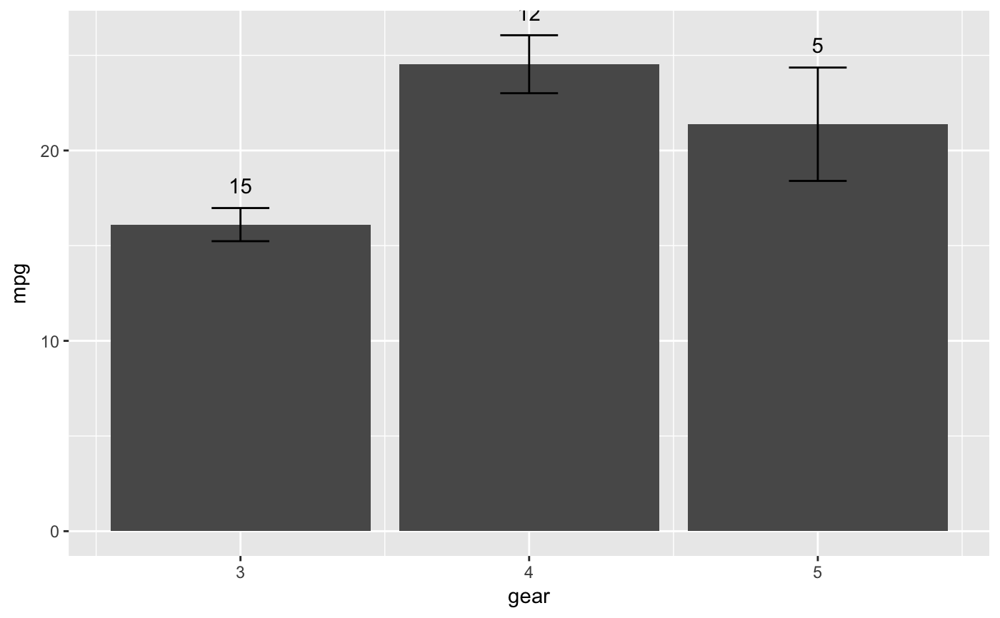
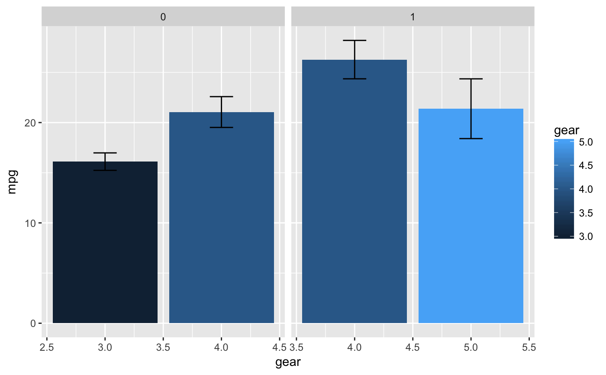

ggplot ggproto objects can not be added together as they are and must be made reusable by first adding to a list. This class aggregates ggproto objects into a list and handles adding into a ggplot construction.
ggcallsa list of ggproto layer objects
library(ggplot2) # a ggpacket can be created as an object by not passing arguments # to the ggpack function. Any ggproto layers or ggpack'd ggpacket # layers can be added directly bar_error_counts <- ggpacket() + stat_summary(fun.y = mean, geom = 'bar') + stat_summary(fun.data = mean_se, width = 0.2, geom = "errorbar") + stat_summary(fun.data = function(d) c( y = mean(d) + sd(d)/sqrt(length(d)), label = length(d)), vjust = -1, geom = 'text') ggplot(mtcars, aes(x = gear, y = mpg)) + bar_error_counts# easier functionalization of subcomponents of a ggplot custom_errorbars <- function(error_function, ...) { ggpack(stat_summary, id = 'bar', ..., fun.y = mean, geom = 'bar') + ggpack(stat_summary, id = 'errorbar', ..., fun.data = error_function, width = 0.2, geom = "errorbar") } ggplot(mtcars, aes(x = gear, y = mpg)) + custom_errorbars(mean_se, bar.fill = gear) + facet_grid(. ~ am, scales = 'free')